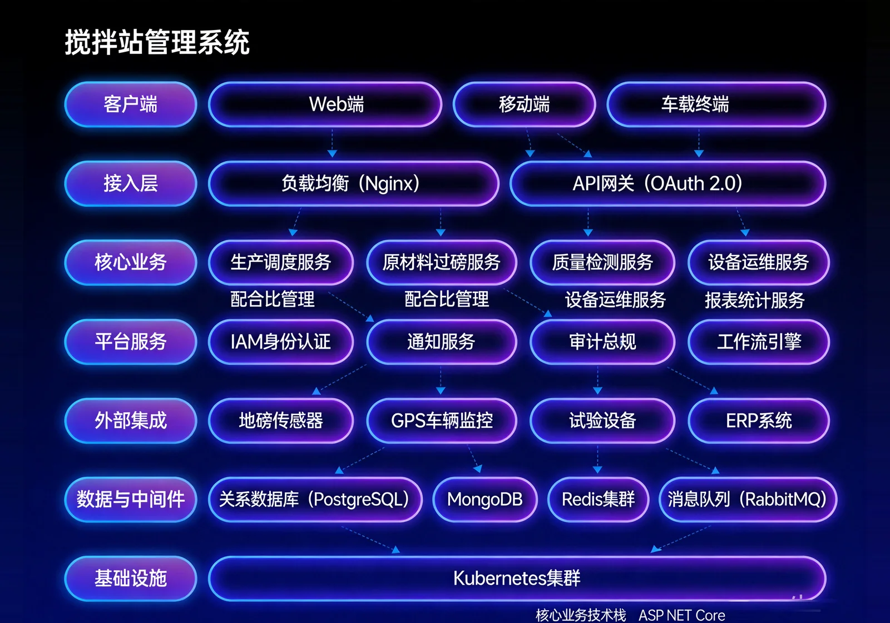

搅拌站管理系统是面向混凝土搅拌站的全流程数字化管理系统。针对工地自建搅拌站面临配合比控制不严、生产调度混乱、物料消耗不清等管理难题，系统通过配比预设、生产订单全生命周期管理、物料消耗统计与跨项目订单结算单据生成等功能，确保混凝土生产配合比精准、过程可追溯，帮助企业提升生产效率、降低原材料浪费。

核心功能
系统覆盖生产管理、物料使用报表、搅拌站配置、混凝土配比、外部订单与发起提料六大核心模块。
生产管理
集中创建、查看与管理所有混凝土生产订单，支持排产、生产下达、状态跟踪、转产与配送全生命周期操作。
生产物料使用报表
统计混凝土生产过程中各标号物料的实际消耗量，与预算配合比对比分析原料使用效率。
搅拌站配置
定义搅拌站类型、指定管理员与生产车间。
混凝土配比管理
为不同强度等级的混凝土预先设定原材料配合比，作为向仓库申请原材料数量的权威依据。
外部订单
集中管理为其他项目代工生产的混凝土订单，支持跨项目结算与产能分析。
发起提料
工长或工程师提交混凝土生产需求申请，经审核后进入搅拌站生产排程。
系统架构

Production Flow
系统采用搅拌站生产管理闭环架构：提料申请→审核→排产→生产→配送→结算；与工程预算管理系统联动，实现混凝土成本实时归集；与物资管理系统联动，保障原材料及时供应。
应用场景
适用于混凝土生产订单排程、配合比精准控制、物料消耗与成本分析、跨项目外部代工结算单据管理等场景。

混凝土生产订单排程
集中管理所有混凝土生产订单，支持排产、生产下达、状态跟踪、转产与配送全生命周期操作。

配合比精准控制
为不同强度等级的混凝土预先设定原材料配合比，确保生产过程配合比精准可控。

物料消耗与成本分析
统计各标号物料实际消耗量，与预算配合比对比分析原料使用效率，为成本管控提供数据支撑。

跨项目外部代工结算
集中管理为其他项目代工生产的混凝土订单，支持跨项目结算与产能分析。
优势与案例
配合比实时调整
支持配合比实时在线调整，确保混凝土质量稳定，灵活满足不同施工场景的强度与工艺需求。
成本实时归集
与工程预算管理系统联动，实现混凝土成本实时归集，生产耗料与预算量偏差即时可见。
生产全流程透明
覆盖提料申请、审核、排产、生产、配送、结算全生命周期，生产进度与质量数据实时可查。
跨项目代工结算
支持跨项目代工生产与独立结算，产能资源灵活调配，利用率最大化。
物资系统联动
与物资管理系统深度联动，原材料库存实时同步，缺料预警自动触发，保障生产连续性。
质量追溯闭环
每批次混凝土配合比、原材料来源、生产时间、质检报告全链路记录，质量责任可追溯。
需求调研
深入了解搅拌站生产流程与配比管理需求，梳理与预算、物资系统的集成点。
系统部署
支持本地化部署与云端部署，适配不同规模搅拌站管理需求与现场网络环境。
培训上线
提供管理员、操作员与工程师分层培训，覆盖配合比维护、生产排程、成本归集与报表使用。
上线验收
按生产流程测试、数据联动验证、性能压测三阶段验收，确保系统稳定后正式交付。
拉各斯轻轨、FIRS 等大型项目混凝土供应管理
背景： 项目混凝土需求量巨大，配合比精度与生产调度效率直接影响施工进度与结构质量。
挑战： 传统模式下配合比调整依赖人工经验，生产进度与成本数据分散，跨项目产能调度缺乏数据支撑。
方案： 部署搅拌站管理系统，实现配合比精准控制、生产全流程数字化管理与成本实时归集。
成果数据： 混凝土质量稳定性与生产效率均获得提升，生产数据与预算量偏差可控。